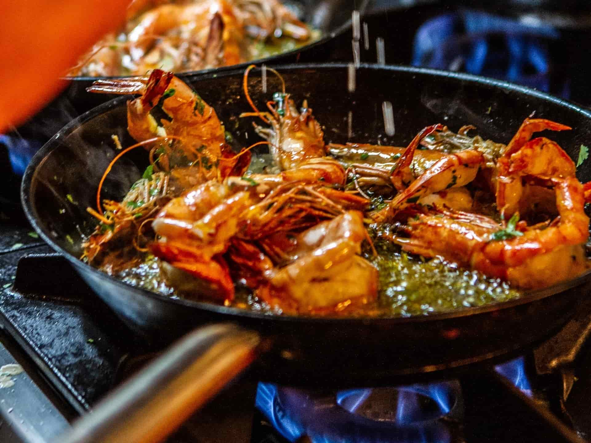
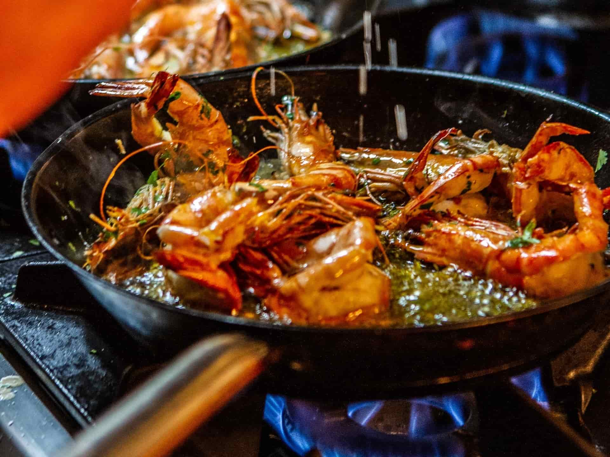

Ikke kun sjømat
på c-food du finner noe mer
C-food er en restaurant i Oslo med en unik atmosfære. Det er her du vil finne tilfredshet, og du vil ønske å komme tilbake ved enhver anledning. Vi oppfordrer deg til å krysse terskelen til restauranten vår og se selv hva restaurantens særegenhet er basert på.
Tanken bak vår meny er å alltid by deg på sesongens beste råvarer og gi deg nye smaksopplevelser hver gang du besøker oss. På Restaurant C-food spiller alltid fisk og sjømat hovedrollene, perfekt tilberedt.
Vi har fokus på norsk vill bærekraftig fisk! En nøye utvalgt vinmeny er med på å skape det perfekte samspillet mellom mat og drikke og alt dette serveres til en svært fornuftig pris.
 
